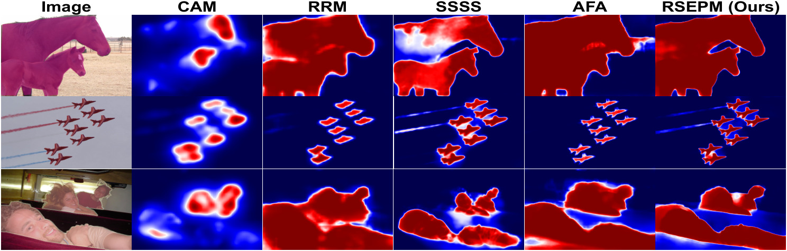
Localization maps on the PASCAL VOC 2012 training set. Compared with conventional CAMs and existing single-stage learning frameworks (RRM, SSSS, AFA), RSEPM shows foreground and background regions more accurately, thanks to the recursive learning process (RS).
Post-processing modules for class activation maps pull in opposite directions: SCG enhances spatial details for larger objects but raises false positives, while PAMR refines boundaries but can increase false negatives. RecurSeed (RS) puts both inside the training loop, so the network recursively learns from its own refined seed and converges toward a mask that reduces both errors. EdgePredictMix (EPM) refines predicted masks with edge information restored from the model's own predictions before mixing, addressing the ambiguity that mixing augmentation otherwise escalates at partial object boundaries.
Image-level class labels are the most economical supervision for weakly supervised semantic segmentation, yet class activation maps (CAMs) highlight only the most discriminative regions of an object. Multi-stage learning frameworks mitigate this at the cost of an intricate training process, while single-stage frameworks use one unified model but lag in performance. The paper names two challenges in this setting.
Self-Correlation map Generation (SCG) enhances spatial details for larger objects but raises false positives for medium and small objects. Pixel-Adaptive Mask Refinement (PAMR) reduces false positives by refining CAM boundaries, but used alone it can increase false negatives. The paper terms these conflicting issues FPN-WSSS-IL.
Mixing augmentations such as ClassMix blend images using model-predicted masks. With image-level labels only, mixing without refining these masks escalates the ambiguity that stems from their partial object boundaries. The paper denotes this challenge IBDA-WSSS-IL.
Although weakly supervised semantic segmentation using only image-level labels (WSSS-IL) is potentially useful, its low performance and implementation complexity still limit its application. The main causes are (a) non-detection and (b) false-detection phenomena: (a) The class activation maps refined from existing WSSS-IL methods still only represent partial regions for large-scale objects, and (b) for small-scale objects, over-activation causes them to deviate from the object edges.
We propose RecurSeed, which alternately reduces non- and false detections through recursive iterations, thereby implicitly finding an optimal junction that minimizes both errors. We also propose a novel data augmentation (DA) approach called EdgePredictMix, which further expresses an object's edge by utilizing the probability difference information between adjacent pixels in combining the segmentation results, thereby compensating for the shortcomings when applying the existing DA methods to WSSS.
We achieved new state-of-the-art performances on both the PASCAL VOC 2012 and MS COCO 2014 benchmarks (VOC val: 74.4%, COCO val: 46.4%). The code is available at https://github.com/shjo-april/RecurSeed_and_EdgePredictMix.
A recursion applied to the integration of SCG and PAMR, beyond their original post-processing roles. The network converges toward a mask that reduces both FN and FP, a boost of over 11% compared with non-recursive methods, and the high-order correlation improves on first-order recursion by 7.4% mIoU.
A novel edge refinement (EP) optimized for mixing augmentation. EPM refines predicted masks by jointly harnessing absolute and relative per-pixel probability values, and consistently boosts the performance of various WSSS methods.
The single-stage framework reaches 70.6% mIoU on the VOC 2012 test set without advanced backbones such as transformers. Extended to a multi-stage framework by applying a random walk, it exceeds recent multi-stage methods by 1.7%.
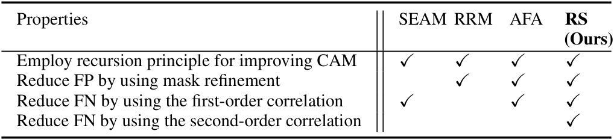
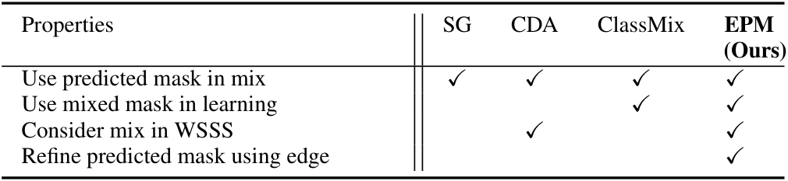
Property comparison with related work. Among SEAM, RRM, AFA and RS, only RS reduces false negatives by using the second-order correlation. Among Saliency Grafting (SG), CDA, ClassMix and EPM, only EPM refines the predicted mask using edges.
The single-stage learning framework has parallel classification and segmentation branches, with two components tailored to weakly supervised segmentation: RecurSeed (RS) and EdgePredictMix (EPM).
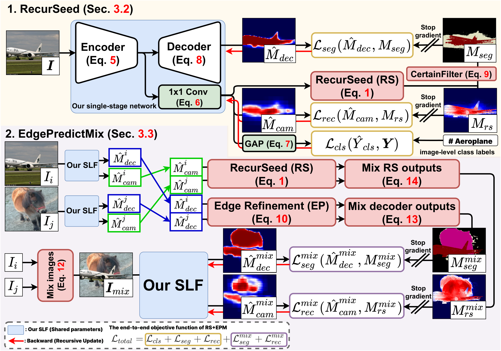
Overview of the single-stage learning framework (SLF) with RS and EPM. From the encoder features (e.g., ResNet-50), the classifier and the decoder (e.g., DeepLabv3+) produce CAMs and per-pixel segmentation outputs. RS provides refined CAMs and pseudo masks by utilizing high-order (e.g., SCG) and image (e.g., PAMR) correlations. EPM synthesizes two images, their RS outputs, and their decoder outputs refined by EP. The encoder and decoder are updated recursively with the RS-related and EPM-related losses.
At every epoch t, RS refines the CAM as Mrs(t) = PAMR(SCG(Mcam(t))), and the network is trained so that the CAM of the next step reproduces this result. A segmentation loss on the decoder output and a reconstruction loss on the CAM are minimized along with the classification loss. CertainFilter (CF) turns the RS output into foreground, background and ignored pixels with two thresholds, which avoids the influence of uncertain labels.
EP uses absolute and relative per-pixel probability values. Thresholding the absolute class probabilities identifies uncertain regions. An edge is extracted from the relative differences between adjacent per-pixel probabilities with Canny, and superpixels are produced from the edge with connected-component labeling. Uncertain pixels are then complemented by the predominant class within each superpixel.
The certain foreground regions of one image, together with its EP-refined mask and its RS seed, are pasted onto another image of the mini-batch. The network then trains on the mixed images: a cross-entropy loss makes the decoder output reproduce the mixed mask refined by EP, and a reconstruction loss makes the CAM reproduce the mixed RS. RS and EPM are used only for training, so they add no complexity at inference time.
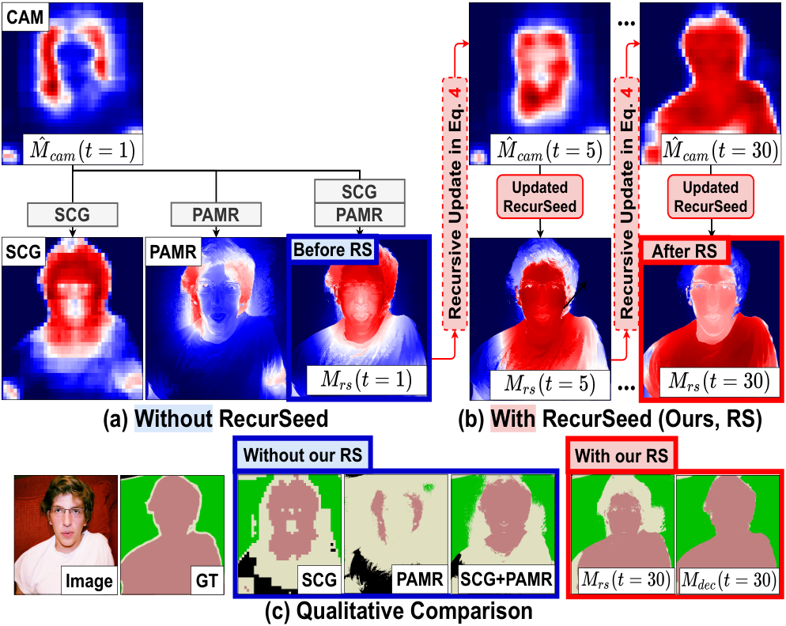
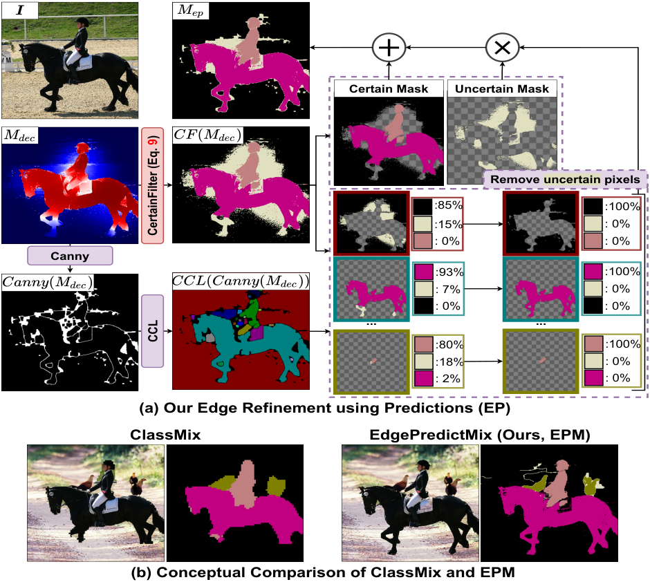
The two components. RecurSeed: without RS, SCG and PAMR are simple post-processing schemes for the CAM. With RS, the CAM improves iteratively and takes advantage of both SCG (reducing FN) and PAMR (reducing FP). Edge refinement: EP creates superpixels separated by the edge between class probabilities and votes the major class within each superpixel to remove uncertain pixels. Unlike ClassMix, EPM mixes pseudo masks whose uncertain regions were eliminated by this relabeling.
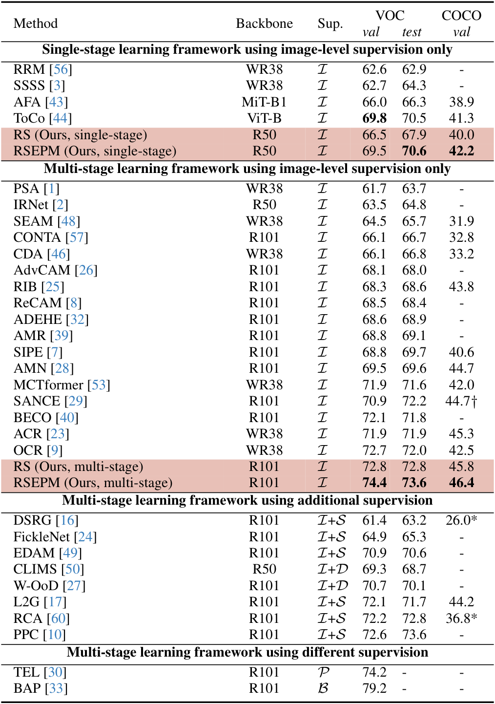
mIoU (%) on PASCAL VOC 2012 and MS COCO 2014. With image-level supervision only, single-stage RSEPM (ResNet-50) reaches 69.5 and 70.6 on VOC val and test and 42.2 on COCO val. Multi-stage RSEPM (ResNet-101) reaches 74.4, 73.6 and 46.4. Sup.: I, image-level class labels; S, saliency supervision; D, an additional dataset; B, box labels; P, point labels. * indicates a VGG‑16 backbone.
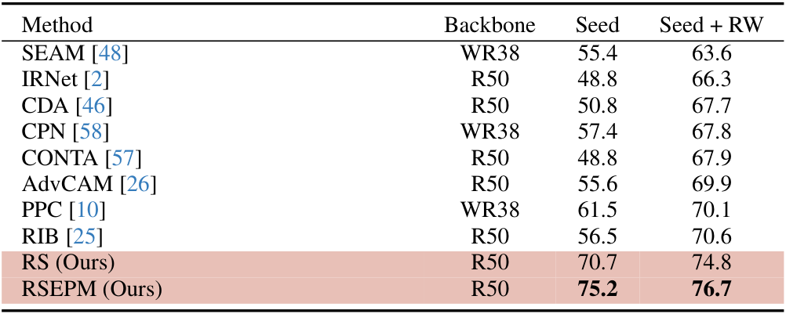
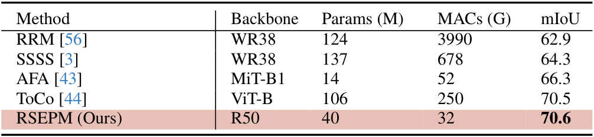
Seeds and complexity of the single-stage network. On the VOC 2012 train set, RSEPM reaches 75.2 mIoU with the result from the trained network (Seed) and 76.7 with the pseudo masks generated by a random walk (Seed + RW). On the VOC 2012 test set, single-stage RSEPM reaches 70.6 mIoU with 40M parameters and 32G MACs.
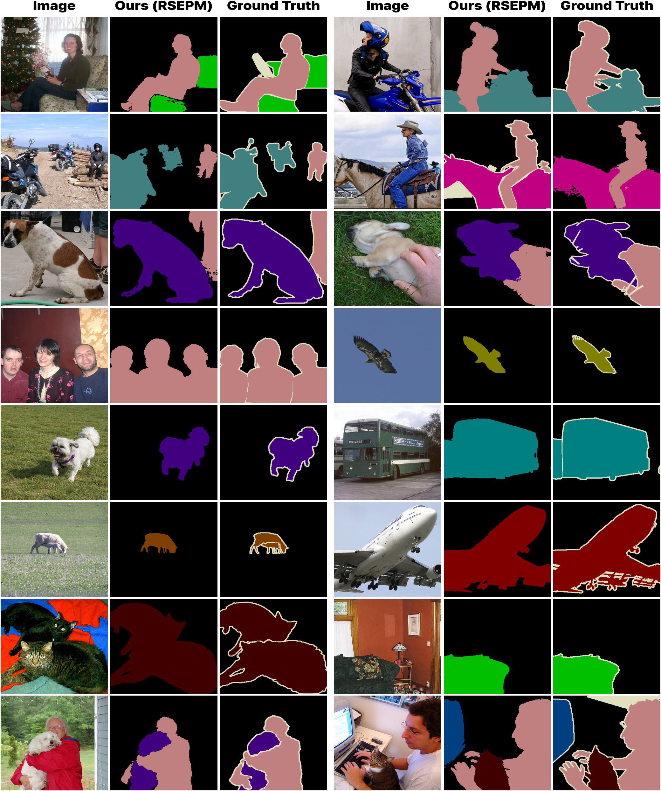
Segmentation results on the PASCAL VOC 2012 val set. Each triplet shows the image, the RSEPM prediction and the ground truth.
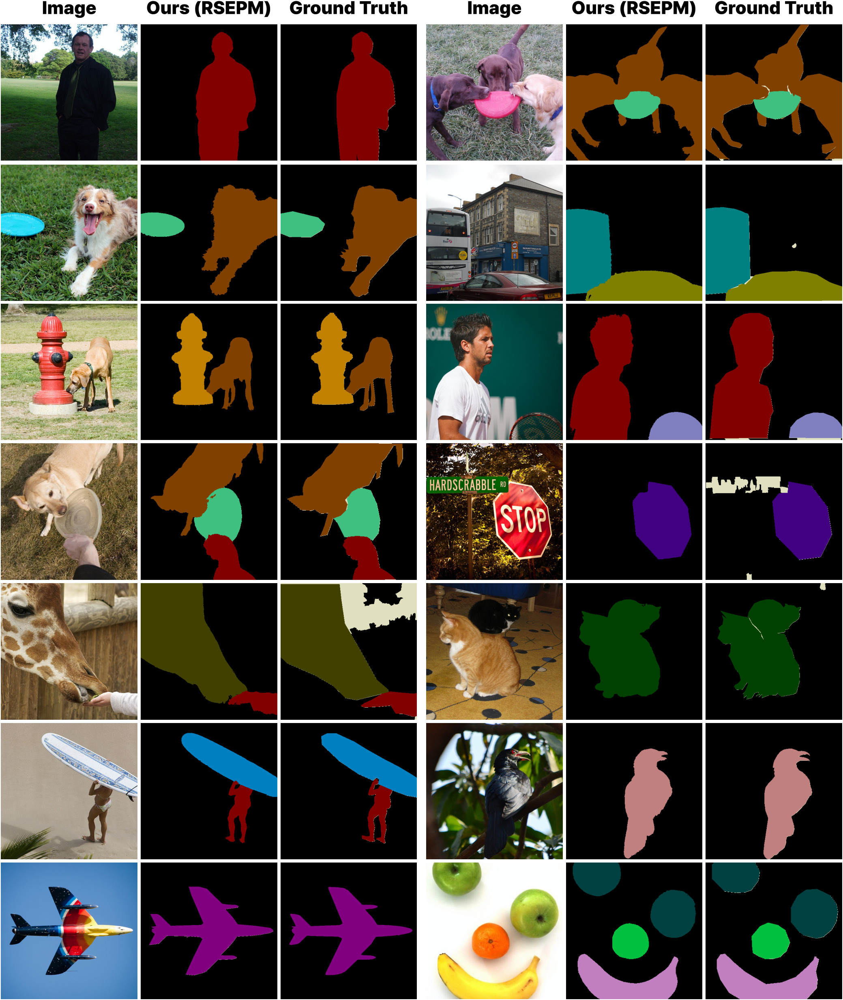
Segmentation results on the MS COCO 2014 val set. The examples include complex scenes, small objects and multiple instances.
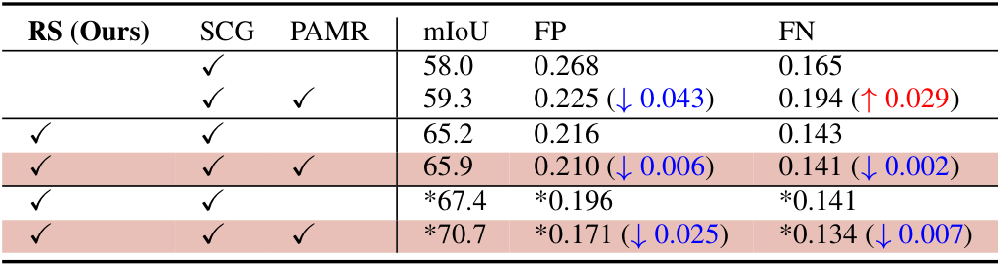
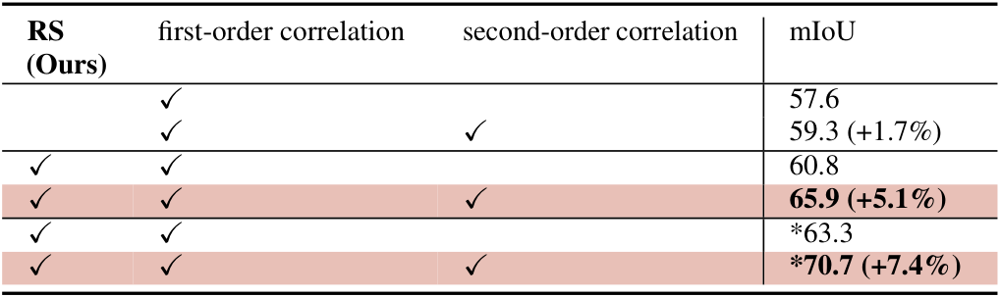
Recursion makes SCG and PAMR work together. In the component analysis on the VOC 2012 train set, the simple integration of SCG and PAMR without RS gives a marginal gain (58.0 to 59.3 mIoU) and raises FN. With RS, both FP and FN decrease and the decoder map reaches 70.7, which is +11.4% over the simple integration. In the correlation study, the second-order correlation with RS improves the decoder map by 7.4% over the first-order correlation (63.3 to 70.7). Without RS the gain is 1.7%. * denotes the decoder map result.
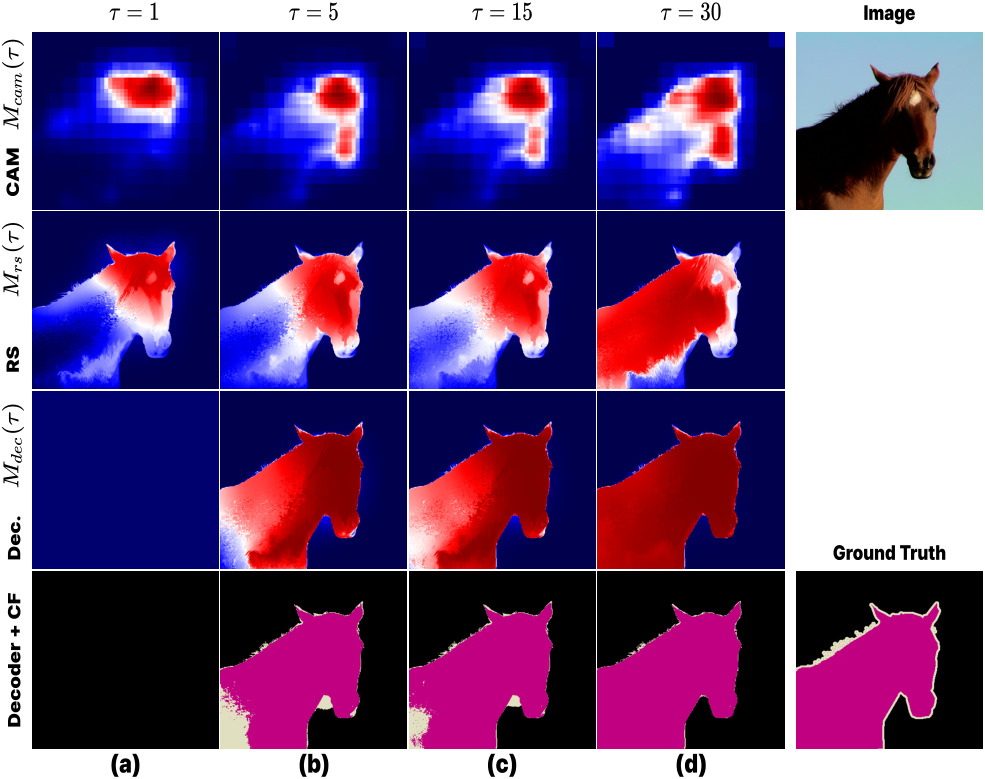
Attention maps and pseudo masks improve step by step. At the initial step (a), the CAM covers the most discriminative part of the object and the decoder output fails to detect all of the foreground. After RS trains the segmentation branch (b, c), the predicted masks improve. With EPM (d), the final pseudo mask (Decoder + CF) is close to the ground truth.
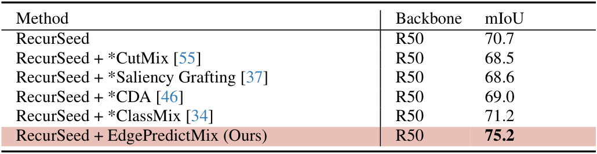
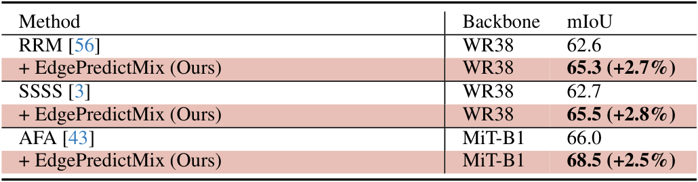
EPM gives the highest mIoU among the mixing methods. On the VOC 2012 train set, with RS applied to every method, CutMix, Saliency Grafting and CDA lower the mIoU of RecurSeed (70.7), ClassMix reaches 71.2, and EdgePredictMix reaches 75.2. Added to other single-stage methods on the VOC 2012 val set, EPM improves RRM, SSSS and AFA by 2.7%, 2.8% and 2.5%.
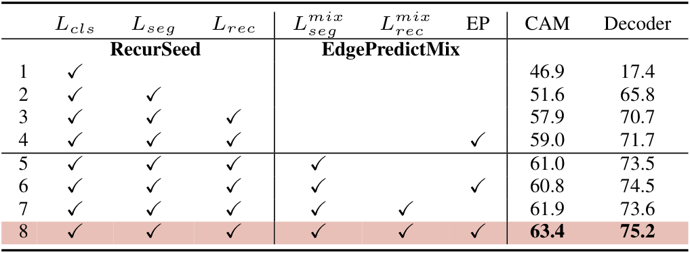
Effect of the key components of RS and EPM. On the VOC 2012 train set, training the encoder and decoder with RS raises the decoder to 70.7 mIoU (row 3), and RS with EP reaches 71.7 even without mixing augmentation (row 4). With all components, the CAM reaches 63.4 and the decoder 75.2 (row 8).
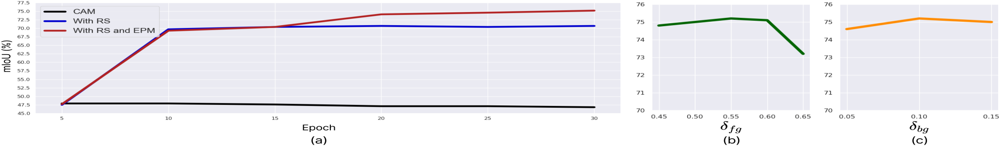
Effects of RS and EPM per epoch, and of the two CertainFilter thresholds. (a) The mIoU increases steeply through RS between the 5th and 10th epochs and then saturates, so EPM is applied after the 15th epoch. (b, c) The mIoU stays high under changes of the foreground threshold δfg and the background threshold δbg. The experiments use δfg = 0.55 and δbg = 0.10.
@article{jo2022recurseed,
title = {RecurSeed and EdgePredictMix: Pseudo-Label Refinement Learning for Weakly Supervised Semantic Segmentation across Single- and Multi-Stage Frameworks},
author = {Jo, Sanghyun and Yu, In-Jae and Kim, Kyungsu},
journal = {arXiv preprint arXiv:2204.06754},
year = {2022}
}